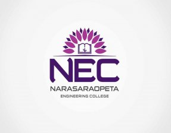
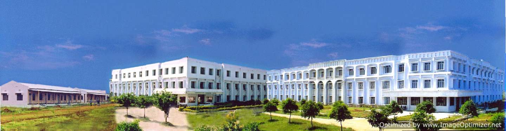

Narasaraopeta Engineering College (AUTONOMOUS) (NEC), an Autonomous Institution with permanent affiliation to JNTUK, Kakinada is promoted and backed by Gayatri Educational Development Society (GEDS). NEC was established in 1998 to provide technical education as the first college in the Palnadu Region. It is located in Narasaraopeta, Guntur District, Andhra Pradesh, India.
PORTFOLIO
NARASARAOPET ENGINEERING COLLEGE

Narasaraopeta Engineering College is run by a group of educationalists, technologists and industrialists. Mr. M.V.Koteswara Rao was instrumental in its set up and acted as the President of GEDS and Chairman of the college managing committee. Mr. Chakravarthi Mittapalli is the Vice Chairman and Director of NEC Group of Institutions, and encourages changes in the realm of engineering, technical and professional education. Mr. Chakravarthi is also acting as the key person behind the industry-institute interaction and the successful employment generation for graduates of NEC Group. The college has been accredited twice by NBA, awarded from the NAAC with the highest grade "A" . It is affiliated with JNTUK, Kakinada, Andhra Pradesh. Narasaraopeta Engineering College. NEC is a Microsoft Edvantage Platinum Partner and hosts Microsoft Innovation Centre on campus and Robotics & Embedded Systems Center. It has also received TCS accreditation and is an Infosys – Campus Connect College.